Redes Difractivas
Clasificar imágenes usando solo luz y vidrio.
Fundamentos de difracción escalar, criterio de conectividad y reproducción numérica de Chen et al. (Engineering, 2021)
Universidad de las Américas Puebla · Proyecto Final de Óptica · Aplicaciones de la Difracción
Presentan: Alonso Hernández Hernández y Ángel Gabriel Munguía Velázquez · Profesor: Dr. Wanderson Maia Pimienta · 2026
¿Y si la luz hiciera el cálculo?
Sin transistores.
Solo difracción.
632.8nm
Láser rojo He–Ne. Atraviesa cinco láminas pasivas de vidrio en un nanosegundo.
0W
Consumo electrónico al clasificar. Sin chips ni código en ejecución: solo interferencia.
Estructura de la exposición
Tres actos: del banco óptico a la teoría y los resultados.
01
La física del arreglo
- Banco óptico visible y fabricación en sala limpia
- Rayleigh–Sommerfeld, fase \(\Phi\) y reflexión de Fresnel
- Espectro angular \(H(u,v;z)\) y falla de Fresnel/Fraunhofer
- Límite de Nyquist (factor 2), conectividad \(D_{\min}\) y \(N_{F,n}\)
Bloque I · Del aparato a la ecuación
02
Del perceptrón a la óptica
- Del perceptrón al MLP clásico
- Equivalencia física: \(\mathbf{W}\mathbf{a} \equiv \text{difracción}\)
- Validación del simulador y \(D_{\min} = z_c\)
- Gradiente holográfico (Wirtinger)
Bloque II · Modelo y entrenamiento
03
Resultados
- Reproducción Fig. 6 e inconsistencias
- Leyes de escala: \(N_{F,n}\) y \(1/(L+1)\)
- Sistema \(1000\times 1000\) en GPU (90.63 %)
- Tolerancias de fabricación (84 %)
Bloque III · Experimentos numéricos
01
La física del arreglo
Del banco óptico visible y su fabricación en sala limpia a Rayleigh–Sommerfeld, el espectro angular y el criterio de separación mínima \(D_{\min}\).
I · 1 — Descripción del sistema · Chen et al. (2021)
Un dígito entra.
Un punto de luz responde.
1. Entrada coherente
El dígito (0–9 o alterado) es una máscara binaria iluminada por una onda plana coherente (salto de \(1000\times\) desde THz).
2. Placas de solo fase
No absorben luz: cada cuadrito de \(4\,\mu\text{m}\) tiene un espesor tallado que retrasa la fase en \([0,\pi]\).
3. Decisión óptica
La interferencia concentra la intensidad \(I \propto |E|^2\) en una de 11 zonas (0–9 y rechazo X).
I · 2 — Proceso de fabricación en sala limpia · Chen et al. (2021)
Cómo se fabrican
los dígitos y las placas.
1. Objetos de entrada · Dígitos transmisivos
Bloqueadores de cromo sobre vidrio
Sustrato: placas de vidrio de sosa (soda glass) limpiadas con acetona y alcohol isopropílico (IPA).
Recubrimiento metálico: película opaca de cromo (Cr) por evaporación por haz de electrones (e-beam).
Fotolitografía láser: fotorresina positiva y Escritura Directa por Láser (LDW) + mordiente de Cr que abre la silueta.
2. Capas difractivas · La red \(\text{D}^2\text{NN}\)
Topografía 3D en obleas de \(\text{SiO}_2\)
Sustrato: obleas de sílice fundida (\(\text{SiO}_2\)) tratadas con promotor HMDS para adherir la resina.
Transferencia UV y grabado: exposición con el mapa de fases, plasma de \(\text{O}_2\) y grabado NLD en seco.
Proceso multinivel: \(s = 3\) ciclos alineados tallan \(2^3 = 8\) niveles de profundidad discreta.
I · 3 — Retardo óptico en sílice fundida y pérdidas de Fresnel
Espesor = fase.
El vidrio frena a la luz.
Retardo de fase en sílice fundida (\(n = 1.457\))
\[
\Phi = \frac{2\pi}{\lambda}(n - n_0)\Delta h \;\Longrightarrow\; \Delta h_{\pi} = \textcolor{#d70015}{692\text{ nm}}
\]
Cuantización a 8 niveles: dividir \(\Phi \in [0,\pi]\) en \(2^3 = 8\) escalones de \(98.9\text{ nm}\) encaja con los \(3\) ciclos litográficos.
Aporte propio · Reflectancia de Fresnel
En cada cara aire–vidrio se refleja \(R = \left(\frac{n-1}{n+1}\right)^2 = 3.46\,\%\). Tras 5 placas (10 caras) se transmite \((1-R)^{10} \approx \mathbf{70\,\%}\): atenúa todos los caminos por igual y no cambia qué detector gana.
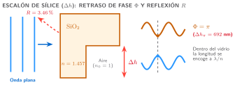
Al cruzar espesor extra \(\Delta h_\pi = 692\text{ nm}\), la onda emerge desfasada \(\pi\text{ rad}\) respecto al aire.
I · 4 — Propagación en el espacio libre
Huygens exacto:
integral de Rayleigh–Sommerfeld.
Integral de convolución espacial (\(z = D\))
\[
U(x,y,z) = \iint_{-\infty}^{\infty} U(x',y',0)\,h(x-x',y-y',z)\,\mathrm{d}x'\,\mathrm{d}y'
\]
Kernel de onda esférica secundaria (\(r \gg \lambda\))
\[
h(x,y,z) \approx \frac{1}{j\lambda}\underbrace{\frac{z}{r}}_{\cos\theta}\,\frac{e^{jkr}}{r}, \qquad r = \sqrt{x^2 + y^2 + z^2}
\]
Cuello de botella directo: \(10^{12}\) sumas por capa
Conectar \(10^6\) píxeles de entrada contra \(10^6\) píxeles de salida de manera directa exigiría \(10^{12}\) términos por transición (\(6\times 10^{12}\) por imagen).
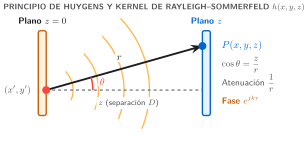
Cada píxel en \(z=0\) emite un frente esférico de amplitud \(1/r\), fase \(e^{jkr}\) y oblicuidad \(\cos\theta = z/r\).
I · 5 — De Helmholtz al dominio de frecuencias espaciales
Pasar a Fourier:
el espectro angular.
Propagación de cada onda plana \(A(u,v;z)\)
\[
A(u,v;z) = A(u,v;0)\,\exp\!\left[jkz\sqrt{1-\lambda^2(u^2+v^2)}\right]
\]
Coseno director respecto al eje óptico \(z\)
\[
\cos\gamma = \sqrt{1 - \lambda^2(u^2+v^2)}, \qquad \rho = \sqrt{u^2+v^2}
\]
Por qué acelera de \(O(N^2)\) a \(O(N\log N)\)
En frecuencias espaciales \((u,v)\), la integral de convolución desaparece: propagar entre placas se reduce a multiplicar cada modo por un factor escalar de fase.
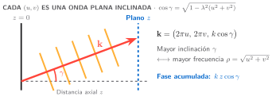
Cada par \((u,v)\) corresponde a una onda plana con vector \(\mathbf{k}\) inclinado un ángulo \(\gamma\) respecto a \(z\).
I · 6 — Filtro exacto \(H(u,v;z)\), evaluación FFT y errata
Propagantes vs. evanescentes
y una errata en el paper.
Función de transferencia exacta \(H(u,v;z)\)
\[
H(u,v;z) = \begin{cases} \exp\!\left[jkz\sqrt{1-\lambda^2(u^2+v^2)}\right], & u^2+v^2 \le 1/\lambda^2 \\[3pt] \exp\!\left[-2\pi z\sqrt{u^2+v^2-1/\lambda^2}\right], & u^2+v^2 > 1/\lambda^2 \end{cases}
\]
Convolución exacta en tres pasos vía FFT
\[
U(x,y,z) = \mathcal{F}^{-1}\!\bigl\{\mathcal{F}\{U(x,y,0)\}\cdot H(u,v;z)\bigr\}
\]
Errata en Chen et al. y linealidad
Las Ecs. 4–5 del paper multiplican por \(H\) en espacio real en vez de en frecuencias \((u,v)\). Además, sin activaciones no lineales intermedias, el campo \(U\) es estrictamente lineal hasta medir \(I = |U|^2\).
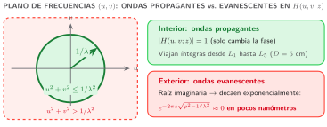
El disco de corte \(1/\lambda\) separa los modos que cruzan los \(5\text{ cm}\) de las ondas evanescentes.
I · 7 — Regímenes de difracción
Aquí fallan Fraunhofer y Fresnel.
No válida
\(N_F \approx 126\)
Fraunhofer (campo lejano)
Exige \(z \gg \pi a^2 / \lambda \approx 19.9\text{ m}\). A \(D = 5\text{ cm}\) la red opera profundamente en campo cercano.
No válida
2.4–9.7rad
Aproximación de Fresnel
Desprecia \(\frac{1}{4}\pi z\lambda^3\rho^4\). Con píxeles de \(4\,\mu\text{m}\) alcanza 2.4 rad en ejes y 9.7 rad en diagonal.
Exacta
\(H(u,v;z)\)
Espectro angular
Preserva a la vez el campo cercano de la placa completa y los ángulos máximos de cada píxel de \(4\,\mu\text{m}\).
I · 8 — Difracción de una neurona · El origen del factor 2
No es el primer cero.
Es el límite de muestreo.
Abertura aislada vs. rejilla
Una rendija cuadrada de ancho \(d_f\) tiene su primer cero en \(\lambda/d_f\); en la mitad todavía irradia el 40.5 % del máximo (\(4/\pi^2\)).
Teorema de muestreo (Nyquist)
Al repetir píxeles cada \(d_f\), las frecuencias mayores a \(u_{\max} = \frac{1}{2d_f}\) son réplicas periódicas (aliasing) incontrolables por separado.
\(\varphi_{\max} = 4.54^\circ\) en luz visible
\[\sin\varphi_{\max} = \frac{\lambda}{2d_f} = 0.0791 \;\Longrightarrow\; \varphi_{\max} = 4.54^\circ\]
En terahertz era \(\approx 70^\circ\). Al encoger las neuronas a \(4\,\mu\text{m}\), el cono se cierra drásticamente y fija \(D\).
I · 9 — Conectividad geométrica entre capas
Cada píxel debe «ver»
toda la placa siguiente.
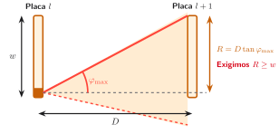
El haz emitido desde la orilla inferior debe cubrir al menos toda la altura \(w = \sqrt{N}\,d_f = 4\text{ mm}\).
1
Geometría de borde a borde (\(R \ge w\))
Con ancho de placa \(w = \sqrt{N}\,d_f = 4\text{ mm}\) y radio del cono \(R = D\tan\varphi_{\max}\):
\[D \ge \frac{w}{\tan\varphi_{\max}} = w\,\frac{\sqrt{1 - \sin^2\varphi_{\max}}}{\sin\varphi_{\max}}\]
2
Sustituir Nyquist (\(\sin\varphi_{\max} = \lambda / (2d_f)\))
Se obtiene en forma cerrada la separación mínima física entre placas:
\[D_{\min} = \sqrt{N}\,d_f\sqrt{\frac{4d_f^2}{\lambda^2} - 1} = \textcolor{#d70015}{50.4\text{ mm}}\]
3
Explicación exacta del montaje experimental
Explica de primeros principios por qué Chen et al. eligen \(D \approx 5\text{ cm}\) para sus \(1000\times 1000\) neuronas visibles.
I · 10 — Escalamiento adimensional y puente con la simulación
Un único invariante:
\(N_{F,n}\) y \(D_{\min} \equiv z_c\).
Aporte propio · Proposición 4.1
Número de Fresnel de un píxel: \(N_{F,n} = \dfrac{d_f^2}{\lambda D}\) \(\implies\) \(\dfrac{D}{D_{\min}} \approx \dfrac{1}{2\sqrt{N}\,N_{F,n}}\)
Mide cuántas zonas de Fresnel abarca una neurona de lado \(d_f\) vista desde la placa siguiente y predice cuándo colapsa la mezcla entre capas:
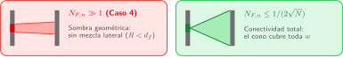
Aporte propio · Proposición 5.1 (Puente al Acto II)
Física = Simulación numérica: \(D_{\min} \equiv z_c\)
Al simular la difracción por FFT con relleno \(2\times\), evitar el aliasing de fase (Matsushima & Shimobaba, 2009) impone una distancia crítica \(z_c\) algebraicamente idéntica a \(D_{\min}\) (verificada a 1.000000 en 15 pares de parámetros).
02
Del perceptrón a la óptica
Isomorfismo con Deep Learning, simulación sin aliasing (\(D_{\min} \equiv z_c\)), validación exacta y gradiente holográfico de Wirtinger.
II · 1 — De una neurona a una red profunda
Primero: ¿qué es un perceptrón?
1. Suma ponderada y activación
Calcula \(z = \mathbf{w}^\top \mathbf{x} + b\) y aplica una función no lineal \(y = g(z)\) (sigmoide o ReLU) para decidir la salida.
2. Entrenar = ajustar pesos
Con ejemplos de etiqueta conocida \(t\), corrige cada peso según el error: \(w_i \leftarrow w_i - \eta(y - t)x_i\).
3. Perceptrón multicapa (MLP)
Apilando capas \(\mathbf{a}^{[l]} = \sigma(\mathbf{W}^{[l]}\mathbf{a}^{[l-1]} + \mathbf{b}^{[l]})\), combinamos muchas fronteras para clasificar imágenes como MNIST.
II · 2 — El puente entre Deep Learning y Óptica
De matrices en silicio a difracción en vidrio.
| Componente |
Red neuronal digital (MLP) |
Red neuronal difractiva (D²NN) |
| Neurona |
Activación escalar \(a_i^{[l]}\) en memoria |
Píxel de vidrio de \(4 \times 4\,\mu\text{m}\) (\(10^6\)/capa) |
| Pesos |
Matriz \(\mathbf{W}^{[l]}\) y sesgo \(\mathbf{b}^{[l]}\) |
Desfase \(t^l = e^{j\Phi^l}\) (\(\Phi^l \in [0,\pi]\), grosor) |
| Conexiones |
Producto \(\mathbf{W}^{[l]}\mathbf{a}^{[l-1]}\) en GPU |
Propagación libre \(\mathcal{P}_D\) (difracción) |
| No linealidad |
Función \(\sigma(z)\) o ReLU en cada capa |
Solo al final al medir intensidad \(|Y^{\text{sal}}|^2\) |
Consecuencia física: toda la cadena de 5 placas es un operador lineal \(\mathcal{M}\)
\[
Y^{\text{sal}} = \underbrace{\mathcal{P}_D\,\mathcal{T}^5\,\mathcal{P}_D\,\mathcal{T}^4\,\mathcal{P}_D\,\mathcal{T}^3\,\mathcal{P}_D\,\mathcal{T}^2\,\mathcal{P}_D\,\mathcal{T}^1\,\mathcal{P}_D}_{\equiv\;\mathcal{M}\text{ (operador lineal complejo)}}\;Y^{\text{ent}},
\qquad
E_k = \iint_{\text{det}_k} \bigl|Y^{\text{sal}}\bigr|^2\,\mathrm{d}x\,\mathrm{d}y
\]
¿Por qué 5 placas y no solo 1?
Una sola máscara tiene pocas «perillas» (solo \(10^6\) fases sin cambiar amplitud). Apilar \(L=5\) capas aporta \(5\times 10^6\) grados de libertad para esculpir \(\mathcal{M}\).
El precio de la pasividad
Sin no linealidades entre vidrios, la red tiene un techo expresivo cerca del ~91 % en MNIST (frente a >99 % en GPU), a cambio de 0 W en inferencia.
II · 3 — Cómo simulamos la difracción en computadora
FFT periódica: el efecto Pac-Man y el relleno \(2\times\).
Propagador discreto en PyTorch (1 muestra por neurona, \(\Delta x = d_f = 4\,\mu\text{m}\))
\[
Y^{l+1} = \mathrm{recorte}\Bigl\{\mathrm{IFFT}\bigl[\mathrm{FFT}\{\mathrm{relleno}(Y^l \circ t^l)\}\cdot H(u_m,v_{m'};D)\bigr]\Bigr\}
\]
\(Y^l \circ t^l\)
Producto de Hadamard (píxel a píxel, no de matrices): multiplica cada neurona por \(t^l_i = e^{j\Phi^l_i}\).
\(N_p = 2\sqrt{N} = 2000\)
Ventana rellena con ceros de \(8 \times 8\text{ mm}\), dando paso en frecuencias \(\Delta u = \frac{1}{2w} = 125\text{ m}^{-1}\).
\(\mathrm{recorte}(w\times w)\)
Conserva solo los \(4 \times 4\text{ mm}\) centrales: modela placas finitas donde la luz exterior se pierde.
II · 4 — Espectro angular de banda limitada (Matsushima & Shimobaba, 2009)
El límite físico es el límite numérico.
1
No cruzar el colchón de ceros (\(z\tan\theta \le w\))
Con \(\sin\theta = \lambda u\) y \(w = \frac{1}{2\Delta u}\), la onda plana con frecuencia \(u\) se salva del aliasing solo si:
\[\frac{z\,|u|}{\sqrt{1/\lambda^2 - u^2}} \le \frac{1}{2\Delta u}\]
2
Despejar \(f_{\lim}\) (espectro angular de banda limitada)
Ponemos \(H = 0\) fuera de \(f_{\lim}\): esas ondas igual se perderían fuera del vidrio de \(4\text{ mm}\).
\[|u|, |v| \le f_{\lim} \equiv \frac{1}{\lambda\sqrt{(2\Delta u\,z)^2 + 1}}\]
3
Igualar \(f_{\lim}\) a Nyquist (\(1/2d_f\)) → Proposición 5.1
Sin límite de banda (ingenuo), el código falla a partir de la distancia crítica \(z_c\):
\[z_c = \sqrt{N}\,d_f\sqrt{\frac{4d_f^2}{\lambda^2} - 1} \;\equiv\; D_{\min} = \textcolor{#ff453a}{50.4\text{ mm}}\]
Proposición 5.1 · Verificada
\(D_{\min} \equiv z_c\)
La separación del artículo (\(D \approx 50\text{ mm}\)) cae justo sobre \(z_c = 50.4\text{ mm}\) (\(50.6\text{ mm}\) paraxial). Verificamos \(f_{\lim}(D_{\min})\cdot 2d_f = \mathbf{1.000000}\) en 15 pares \((\sqrt{N}, d_f)\).
Ingeniería numérica · Doble precisión
¿Por qué calcular \(H\) en float64?
En \(D = 5\text{ cm}\), la fase \(kD \approx 4.96\times 10^5\text{ rad}\). En float32 habría saltos de redondeo de 0.031 rad. Evaluamos \(H\) en 64 bits y luego convertimos a complex64 para GPU.
II · 5 — Verificación física del propagador en PyTorch
Validado contra soluciones exactas.
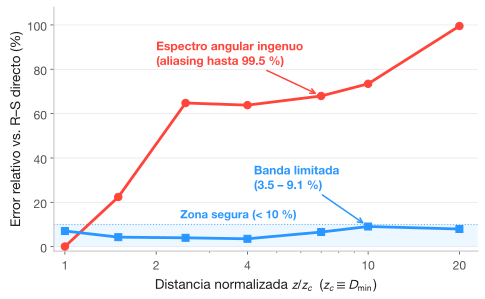
Error frente a la integral de Rayleigh–Sommerfeld directa (\(z = 1\text{ a }20\,z_c\), neuronas de \(4\,\mu\text{m}\))
0.04%
Error máximo frente a la solución analítica de Fresnel (abertura cuadrada de \(200\,\mu\text{m}\) a \(z = 8\text{ mm}\), \(N_F \approx 2\)).
3.6%
Error máximo en el eje de una abertura circular (\(a = 40\,\mu\text{m}\)) frente a Rayleigh–Sommerfeld exacta (\(z \ge 0.3\text{ mm}\)).
99% → 9.1%
Con banda limitada el error queda en 3.5–9.1 % (luz que realmente sale de \(w\)), frente a 22–99 % del método ingenuo.
II · 6 — Retropropagación óptica y cálculo de Wirtinger
Aprender es grabar un holograma.
Pasos clave de Wirtinger (\(G \equiv \partial\mathcal{L}/\partial Y^*\))
\[\mathcal{P}_D^\dagger = \mathcal{F}^{-1}\,\mathrm{diag}(H^*)\,\mathcal{F} = \mathcal{P}_{-D}\]
\[\frac{\partial\mathcal{L}}{\partial\Phi_i^l} = 2\,\operatorname{Im}\!\left\{G_i^{W,l}\,(W_i^l)^*\right\}\]
Como la FFT normalizada es unitaria, conjugar \(H\) equivale a propagar el error hacia atrás (\(-D\)). Con una ida y una vuelta se calculan los 5 millones de gradientes.
¿Por qué «holográfico»?
Un holograma registra \(|W + R|^2\), cuyo término cruzado es \(R W^*\). Aquí el gradiente usa exactamente el producto cruzado \(G^W W^*\) entre la onda real y la de error.
Sigmoide y normalización
\(\Phi = \pi\,\sigma(\theta) \in [0,\pi]\) para fabricabilidad, y \(s_k = T\,E_k / \sum E_j\) (\(T=10\)) para no depender de la potencia del láser.
07_check_gradient.py (doble precisión): los 5 pasos a mano coinciden con PyTorch autograd al límite de máquina.
\(4.49\times 10^{-16}\)
03
Resultados
Reproducción de la Fig. 6, conectividad acumulada \(1/(L+1)\), óptica emergente, tolerancias de fabricación y sistema \(1000\times 1000\) en GPU.
III · 1 — Red de prueba (80 × 80 píxeles, 10 clases, 20 épocas)
Reproducción de la Figura 6 del paper.
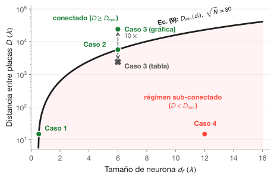
Curva \(D_{\min}(d_f)\) para \(\sqrt{N}=80\) y ubicación de los 4 casos (flecha \(10\times\) en el Caso 3)
| Caso | \(d_f\,(\lambda)\) | \(D\,(\lambda)\) | \(D/D_{\min}\) | Paper | Aquí |
| 1 | 0.53 | 15 | 1.01 | 90.0 % | 89.8 % |
| 2 | 6 | \(5.7\times 10^3\) | 0.99 | 91.0 % | 89.0 % |
| 3 (gráf.) | 6 | \(2.4\times 10^4\) | 4.18 | 91.2 % | 84.8 % |
| 3 (tabla) | 6 | \(2.4\times 10^3\) | 0.42 | 91.2 % | 91.2 % |
| 4 | 12 | 15 | 0.00065 | «~0.1» | 14.4 % |
Configuración experimental reducida
\(10\,000\) imágenes de entrenamiento y \(500\) de prueba con Adam (\(\text{lr}=10^{-3}\)). Casos 1 y 2 validan el criterio sobre \(D = D_{\min}\).
III · 2 — Diagnóstico crítico del artículo
Hallamos dos inconsistencias.
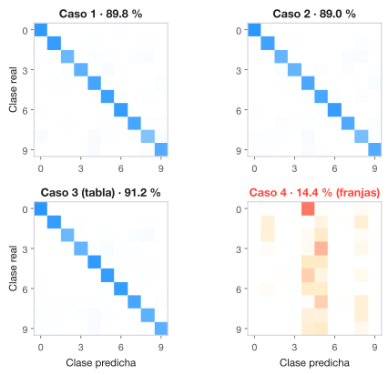
Matrices de confusión (500 pruebas): diagonales limpias en 1–3 y colapso vertical en Caso 4
Inconsistencia 1 · Caso 3 (error \(10\times\))
Gráfica (\(4.18\,D_{\min}\)) vs. Tabla (\(0.42\,D_{\min}\))
Con la gráfica (\(2.4\times 10^4\lambda\)), la luz se escapa por los bordes de la apertura finita y baja a 84.8 %. Con la tabla (\(2.4\times 10^3\lambda\)) obtenemos 91.2 % exacto —¡aun estando «debajo» de \(D_{\min}\)!
Inconsistencia 2 · Caso 4 («~0.1 %» imposible)
Azar en 10 clases = 10 % (fracción 0.1)
Con \(d_f = 12\lambda\) (\(\varphi_{\max} = 2.39^\circ\)) y \(D = 15\lambda\), el cono solo se abre \(R \approx 0.6\lambda < d_f\). Como una placa de solo fase no altera la intensidad local sin difracción lateral, la salida copia a la entrada (14.4 %).
III · 3 — Barrido continuo de \(D / D_{\min}\) (\(L = 5\) placas, 20 épocas)
Diez veces más estricto de lo necesario.
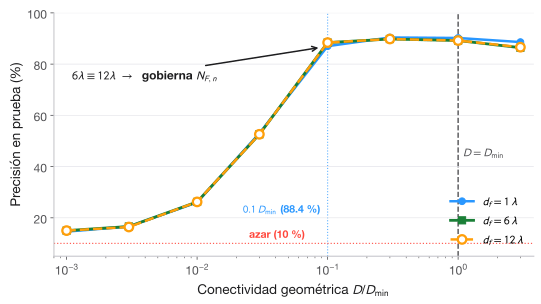
Precisión vs. \(D/D_{\min}\) para \(d_f = 1\lambda,\,6\lambda,\,12\lambda\) (\(\sqrt{N} = 80\))
Proposición 4.1 confirmada
Colapso exacto \(6\lambda \equiv 12\lambda\)
Ambas curvas coinciden punto a punto (88.4 % en \(0.1\,D_{\min}\), pico 89.8 % en \(0.3\,D_{\min}\)). Queda demostrado que el invariante físico que gobierna es \(N_{F,n} = \frac{d_f^2}{\lambda D}\).
Transición real
Funciona ya en \(0.1\,D_{\min}\)
La transición ocurre entre \(0.03\) y \(0.1\,D_{\min}\) (\(1\lambda\) llega a 90.4 %). En \(3\,D_{\min}\) baja a 86.4–88.6 % por fuga de luz fuera de los bordes.
III · 4 — Barrido por número de placas (\(L \in \{1, 3, 5, 8\}\), \(d_f = 6\lambda\))
Conectividad acumulada: relevos en \(L+1\) saltos.
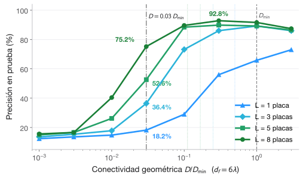
Al sumar capas, el codo de transición se desplaza hacia la izquierda como \(1/(L+1)\)
MÚLTIPLES SALTOS PEQUEÑOS SUMAN > \(w\)
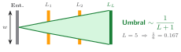
Salto de precisión en \(0.03\,D_{\min}\)
Sube de forma monótona al dar más saltos: 18.2 % (\(L=1\)) → 36.4 % (\(L=3\)) → 52.6 % (\(L=5\)) → 75.2 % (\(L=8\)).
Capacidad expresiva
Con \(L=1\), incluso en \(3\,D_{\min}\) se estanca en 73.0 % (faltan perillas). Con \(L=8\) alcanza 92.8 % en \(0.3\,D_{\min}\).
III · 5 — Estructuras físicas aprendidas sin supervisión óptica
Sin programarle óptica, inventó placas zonales.
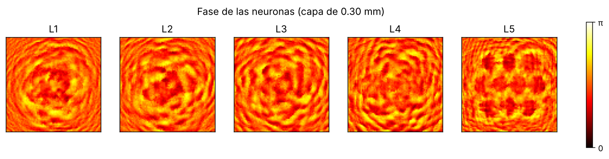
Fases aprendidas \(\Phi \in [0,\pi]\) en el Caso 2 (\(80\times 80\), abertura \(0.30\text{ mm}\)): clara división funcional entre L1–L4 y L5
Capas L1 a L4
Placas zonales y rejillas curvas
Anillos cuasi-concéntricos de frecuencia creciente que capturan el haz del dígito, lo desvían sin dejarlo escapar por los bordes y separan sus componentes de Fourier.
Capa L5 (última máscara)
Matriz de microlentes difractivas
Organiza automáticamente 10 sub-aberturas focalizadoras en la geometría exacta 3–4–3 de los detectores para concentrar la energía en la clase correcta.
III · 6 — Radiografía longitudinal del campo (corte \(x\text{--}z\) en \(y = 0\))
Así viaja la energía de capa en capa.
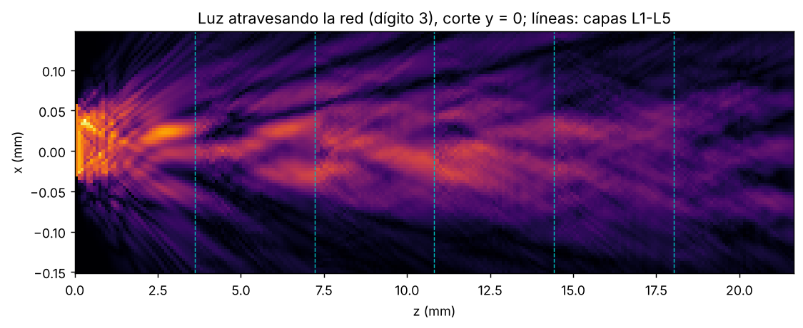
Intensidad en el plano \(y = 0\) para un dígito 3 (las líneas punteadas marcan las 5 capas L1–L5)
1. Entrada (\(z = 0\))
La luz cruza el trazo del dígito 3 en la zona central y se abre en abanico por difracción hasta L1.
2. L1 a L4 (redirigir)
Las placas zonales canalizan la energía en trayectorias oblicuas manteniéndola dentro del vidrio.
3. Tras L5 (enfocar)
Las microlentes concentran selectivamente el haz sobre el detector del 3 en el plano de salida.
III · 7 — Tolerancias de fabricación (1/2): parámetros robustos
8 escalones y ±10 % de grabado casi no degradan.
(a) Cuantización de fase
3 pasos litográficos (8 niveles) bastan
Con 2 niveles colapsa (8.4 %); con 4 niveles baja a 54.0 % en \(80^2\). Pero 8 niveles (\(98.9\text{ nm}\)/escalón) conservan 88.2 % (\(80^2\)) y 91.05 % (\(1000^2\)).
(b) Profundidad de grabado \(\Delta h\)
Robusta ante \(\pm 10\%\) de error
Un error de \(\pm 10\%\) en la altura grabada mantiene 88.8 % en \(80^2\) y 89.65–91.70 % en \(1000^2\). Estos dos efectos no explican la caída al 84 %.
III · 8 — Tolerancias de fabricación (2/2): el cuello de botella físico
Cuatro micras lo cambian todo.
(c) Culpable del 84 % experimental
Alineación lateral: 1 neurona (\(3.8\text{–}4\,\mu\text{m}\))
Desviar 1 píxel cae a 83.9 % (\(80^2\)) y 81.4 ± 3.5 % (\(1000^2\)). Con 2 píxeles cae a 50.1 % / 38.4 %, y con 3–5 llega al azar.
(d) Advertencia axial · \(\Delta D/D \propto 1/\sqrt{N}\)
\(\Delta D \le \frac{2d_f^2}{\lambda} \approx 50.6\,\mu\text{m}\) (¡0.10 % de 50 mm!)
Mientras \(80^2\) tolera 1.3 %, en \(1000^2\) un error de apenas \(\pm 2\%\) (\(\pm 1\text{ mm}\), \(20\times\) el límite) colapsa la precisión a 12.05–15.05 %.
III · 9 — Eficiencia de detección \(\eta = \sum_k E_k / \iint |Y^{\text{sal}}|^2\)
Concentrar luz: de 1.6 % a 18.6 % (\(11\times\)).
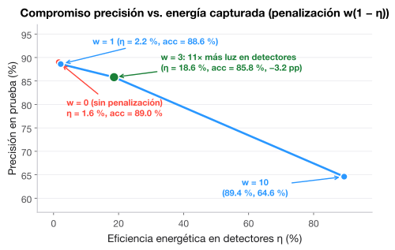
Pérdida \(\mathcal{L} + w(1-\eta)\) evaluada en el Caso 2 (\(80\times 80\), 20 épocas)
Pérdida original (\(w = 0\))
Solo 1.1–1.6 % cae en detectores
Usar energía relativa (\(E_k/\sum E_j\)) solo exige que una ventanita gane a las demás: el resto de la luz cae fuera de los detectores (1.1 % en \(1000^2\)).
Penalizando desperdicio (\(w = 3\))
11× más señal óptica
Subimos \(\eta\) de 1.6 % a 18.6 % a cambio de solo 3.2 puntos (89.0 % → 85.8 %), crucial para superar ruido de fondo en un experimento real.
III · 10 — Sistema completo a escala real (\(1000 \times 1000\) neuronas, 11 clases)
Un millón de píxeles por placa: 90.63 %.
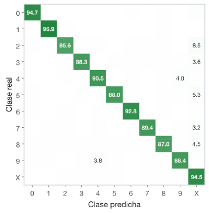
Matriz sobre 11 000 pruebas (10 000 dígitos 0–9 + 1 000 clase X)
90.63%
Total (11 clases)
Paper: 91.57 % (20 ép.)
90.24%
Dígitos 0–9
10 000 imgs. prueba
94.50%
Clase X
1 000 tapados/alterados
Rendimiento GPU · RTX 5060 Ti (16 GiB)
2.93 h para 6 épocas (20 004 pasos Adam)
Mallas \(2000\times 2000\) en complex64 con --bs 24: 7.03 GiB VRAM pico y 20.32 ms/img (29.3 min/época vs. ≈1 h/época en GTX 1080 del paper).
Comportamiento en prueba
El dígito 1 logra la diagonal más alta; los pocos errores residuales suelen enviar dígitos ambiguos (como 2 o 5) al detector de rechazo X.
III · 11 — Clasificación selectiva y límite físico del modelo
Rechazo automático X y techo por linealidad.
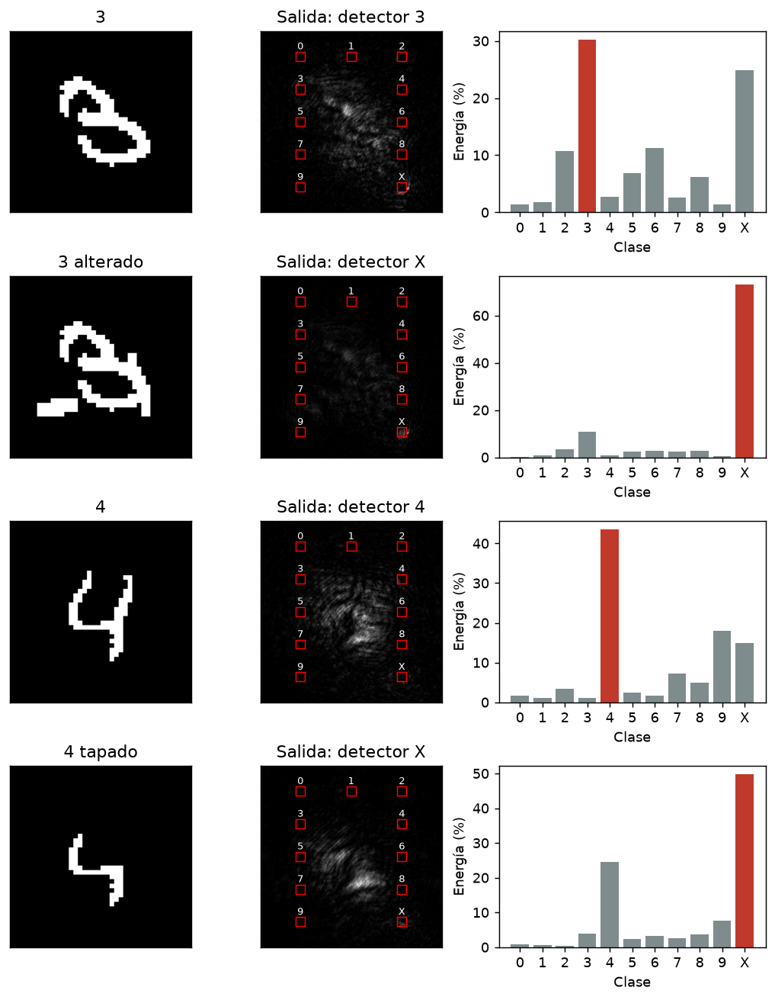
Dígito 3 y 4 intactos vs. alterado/tapado: estos redirigen 50–73 % al detector X
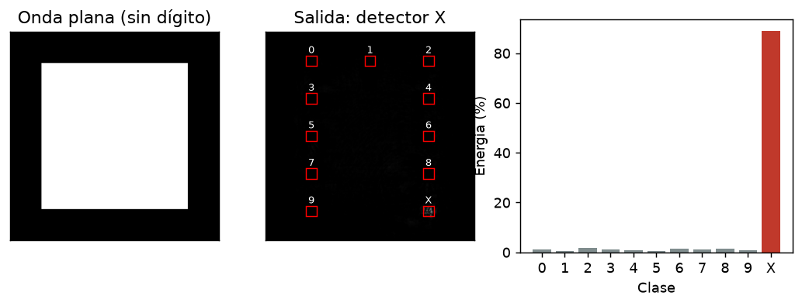
Onda plana vacía: desvía ≈ 89 % directo al detector X
¿Por qué ~91 % y no >99 % como una CNN?
No es falta de épocas (el aprendizaje ya converge en la época 6: \(79.1\% \to 90.63\%\)). Es el límite impuesto por la linealidad estricta \(Y^{\text{sal}} = \mathcal{M}Y^{\text{ent}}\) sin activaciones no lineales entre vidrios.
Conclusiones · Para llevarse
La difracción
también calcula.
Campo cercano exacto
Con \(N_F \approx 126\) y errores de fase de hasta 9.7 rad, fallan Fraunhofer y Fresnel: se necesita espectro angular exacto.
Física = muestreo
\(\varphi_{\max}\) sale de Nyquist, \(D_{\min} \equiv z_c\) une física y simulación, y la conectividad escala como \(N_{F,n}\) y \(1/(L+1)\).
Óptica emergente
El ajuste holográfico hace surgir placas zonales y microlentes, logrando 90.63 % en \(1000\times 1000\) (94.50 % en clase X).
Límites físicos
La linealidad del campo topa la precisión cerca de 91 %, y la alineación (1 neurona) más \(\Delta D/D \propto 1/\sqrt{N}\) dominan el montaje.
Gracias por su atención · ¿Preguntas?
Código, tesina y simulaciones: github.com/AngelGab3/Final_Project_Optics_Difractive_Neural_Networks